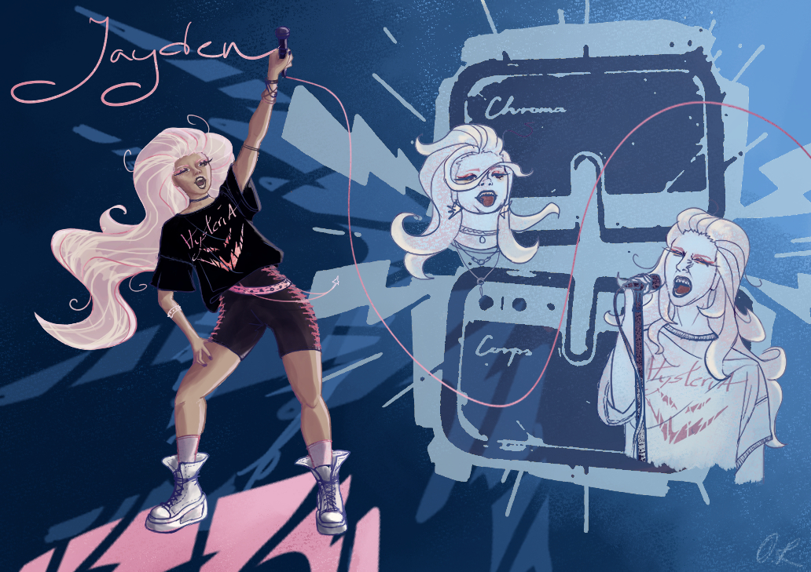
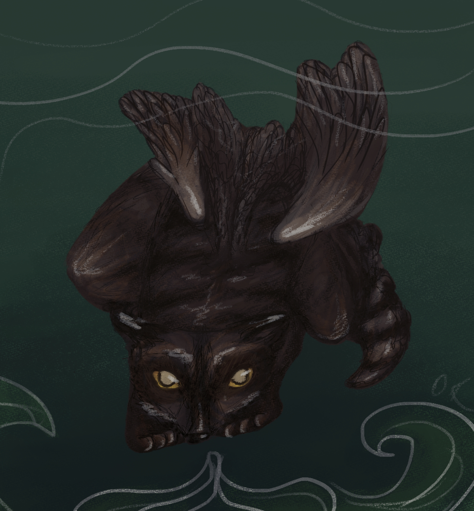
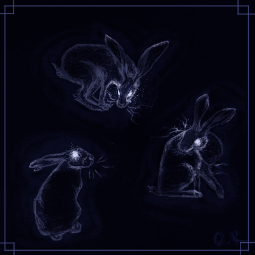
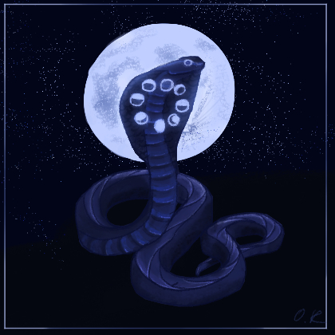
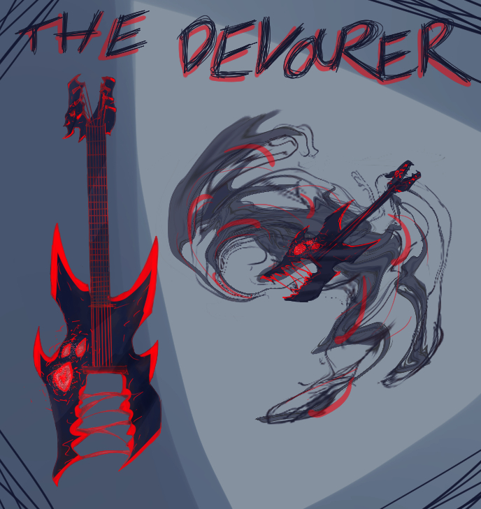

Gallery

This creature nearly drowned in the swamp when they were human, on her way to her wedding, if a lake spirit hadn't taken mercy on her. They fused, she survived, but was unrecognizable to her lover. She was left wondering the swamp, waiting for their lover to come back to them.
Water Creature

Made for the 2026 Chroma Corps challenge as a follow-along.
Onigiri Owls

This creature brings news from all across the land. Made for the 2026 Chroma Corps challenge as a follow-along.
Winged Emissary

Part toad, part dragon, possibly undead. Made for the 2026 Chroma Corps challenge as a follow-along.
Zombie Toad Dragon

An album cover made for one of my rock-singer characters, Jayden. Made for the 2026 Chroma Corps challenge as a follow-along.
Female Hysteria

These scissors bring balance to different realms. A world clad in darkness shall see some light and a world that's seen no sorrow shall know it. Made for the 2026 Chroma Corps challenge as a follow-along.
Nemesis - Scissors that cut through reality

Eos has been here since the beginning of time. A demon? A goddess? No one knows for sure. She has the ability to bring forth creation and wonder, but also destruction and fear. For better or for worse, her powers have been executed if a blazing red sun is seen in the sky.
Eos - the Red Sun Goddess/Demoness

A quiet creature from a strange forest.
Willow Deer

Jayden is a rock singer created for the the 2026 Chroma Corps challenge as an entry submission.
Rockstar Jayden

As a creature who feeds on fogs in the forests, it has many times helped people find their way back home by clearing their vision. Intentional or a lucky coincidence, no one knows, yet it has become known as the protector of those who visit the woods. Created for the the 2026 Chroma Corps challenge as a follow-along.
Fogeater

These ghost hares are the restless souls of hares hunted by humans. They can be seen hopping aruound the forest during full moons, and should a human stumble upon them, they will most often than not, never be seen by other humans again.
Ghost Hares

This nocturnal snake, benigne in nature, enjoys basking in moonlight on stones near streams, lakes and other bodies of water, sparkling almost as if part of the sky.
Moon Snake

Jayden's ultimate form. Jayden tamed the Devourer and became the Rock Overlord. Created for the the 2026 Chroma Corps challenge as a follow-along.
Guitar Solo

The Devourer has the ability to enhance it's user's music to divine levels, earning the admiration of everyone listening, if it is displeased with your music, though, it will devour your soul. Use at your own risk. Created for the the 2026 Chroma Corps challenge as a follow-along.